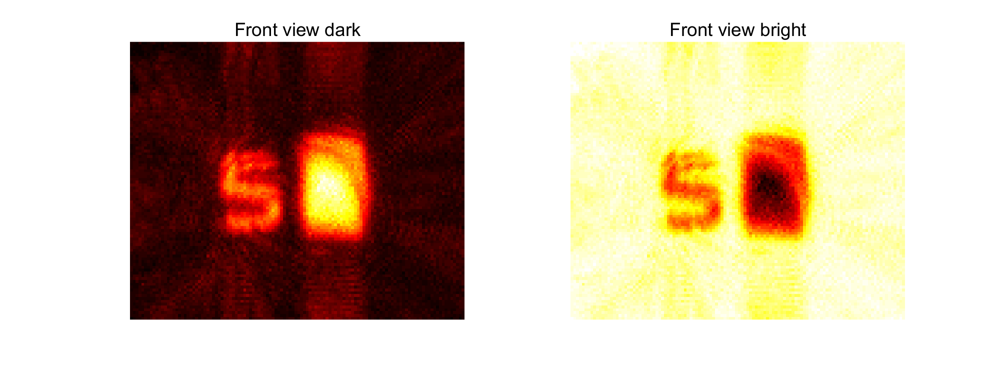
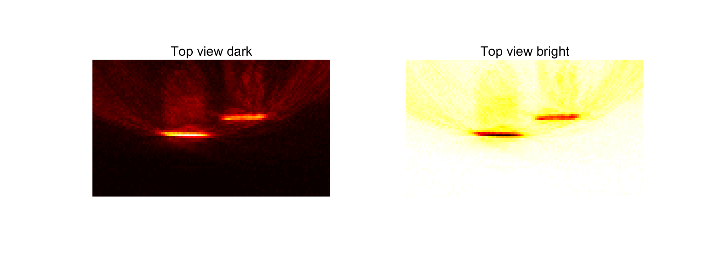
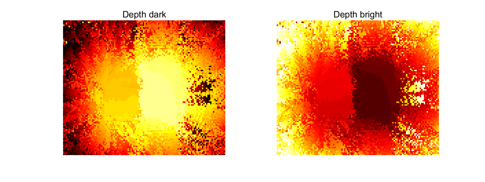

[img1, img_depth] = max(fw,[],1);
img1 = squeeze(img1);
img_depth = squeeze(img_depth);
img1 = rot90(img1, 2);
img_depth = rot90(img_depth,2);
img2 = squeeze(max(fw,[],2));
figure
set(gcf, 'Position', [10, 10, 800, 300], 'Color', 'None')
ax1 = subplot(1,2,1);
imagesc(img1)
title('Front view dark')
axis image
axis off
colormap(ax1,hot);
ax2 = subplot(1,2,2);
colormap default
imagesc(max(img1(:))-img1)
title('Front view bright')
axis image
axis off
colormap(ax2,hot);
saveas(gcf,['./loopsave/' 'front_view' '.jpeg']);
figure
set(gcf, 'Position', [10, 10, 800, 300], 'Color', 'None')
ax3 = subplot(1,2,1);
imagesc(img2)
title('Top view dark')
axis image
axis off
colormap(ax3,hot);
ax4 = subplot(1,2,2);
colormap default
imagesc(max(img2(:))-img2)
title('Top view bright')
axis image
axis off
colormap(ax4,hot);
saveas(gcf,['./loopsave/' 'top_view' '.jpeg']);
figure
set(gcf, 'Position', [10, 10, 800, 300], 'Color', 'None')
ax5 =subplot(1,2,1);
imagesc(img_depth)
title('Depth dark')
axis image
axis off
colormap(ax5,hot);
ax6 =subplot(1,2,2);
imagesc(max(img_depth(:)) - img_depth)
title('Depth bright')
axis image
axis off
colormap(ax6,hot);
saveas(gcf,['./loopsave/' 'depth_front_view' '.jpeg']);
  